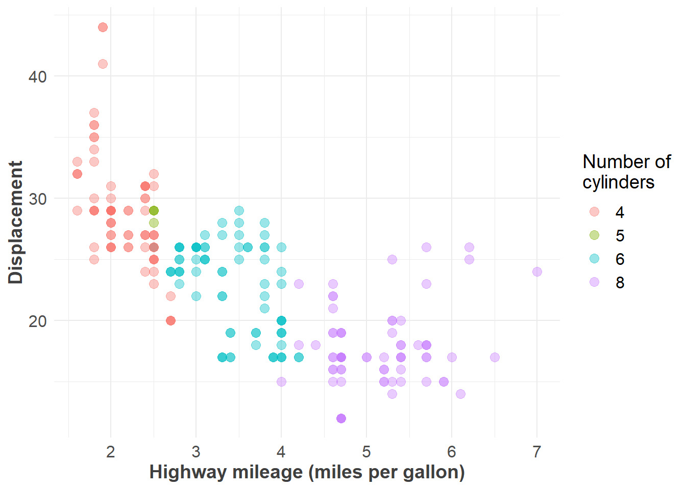

library(tidyverse)
ggplot(mpg, aes(x = displ, y = hwy, colour = factor(cyl))) +
geom_point(size = 3, alpha = I(4 / 10)) +
labs(x = "Highway mileage (miles per gallon)", y = "Displacement") +
scale_colour_discrete(name = "Number of\ncylinders") +
theme_minimal() +
theme(
axis.text = element_text(size = 12),
axis.title = element_text(size = 14, color = "#3f3f3f", face = "bold"),
legend.title = element_text(size = 14),
legend.text = element_text(size = 12)
)